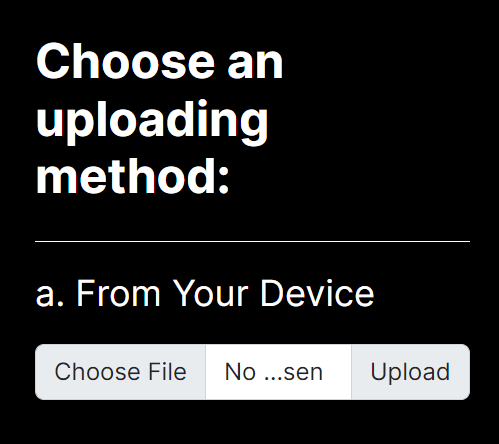
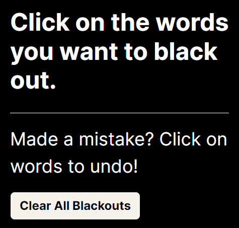
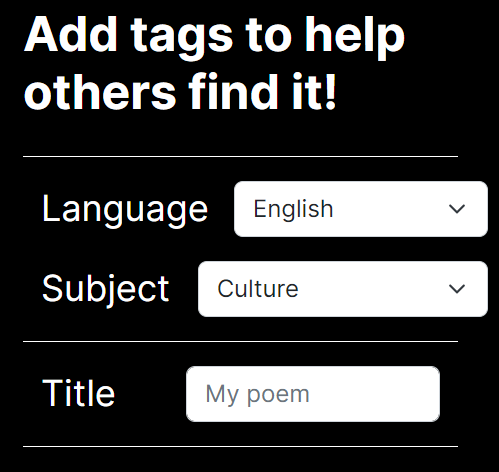

How to Make a Blackout Poem
Step 1: Choose an uploading method
To start using our blackout poetry platform, you will first head over to the create tab and choose an uploading method, where you can choose from two options: Text entry or browsing the community. If you want to use your own text source to make your blackout poem, simply paste your text into the text entry box. If you don't have a piece of text in mind, go ahead and click browse to find a piece of text to use. Once you have your piece of text selected, either your own or from our site, click next.
Tip: Click on the words in the preview text box to get a feel for how creating a blackout poem works!
Step 2: Create your poem
Once you have selected and uploaded your text, you should see your text reloaded into the box to the right, replacing the preview text. To make your blackout poem, first take a good look at your text and brainstorm which words you might want to include in your poem. Next, blackout all the words that you don't want in your poem. Once you are satisfied with how your poem reads and looks, click next
Tip: If you made a mistake and clicked on a word you don't want blacked out, simply click it again and it will be shown again. You can also click "Clear All Blackouts" if you want to start from scratch.
Step 3: Publish your poem!
After you have created your blackout poem, the last step is to publish it! You can upload it as is, but we recommend adding tags to help others find your poem! Go through the tagging options and choose the subject of your source text. For example, if you used a little excerpt from a news article, you could select "politics". Next, you can add a title to your poem, as well as the title and author of the source text that you used. As an optional last step, you can add a description to your poem, explaining what your poem is about or your thought process behind it.
Now you have all that you need to create your first blackout poem. Have fun creating!